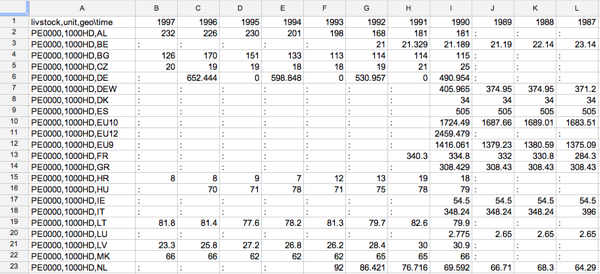

Organisation
Data, DSD, dict:
- data/ … contains the observations in DataCube
- dsd/ … contains the Data Structure Definition (DSD) in DataCube
- dic/ … contains the dictionaries DataCube
Walkthrough Example
In the following, we use the Equidae (annual data) (apro_mt_lsequi) dataset throughout to demonstrate all features available. In a simple, tabular rendering it looks as follows - click on the figure to get to a Google Docs spreadsheet:
We have a dataset with four dimensions here: livstock, unit, geo and time. Now, how to make sense of this? First, we could inspect the metadata for a dimension to learn more about it. This is what the DSD captures: FIG.
Observations/DataCube
Asking questions ... SPARQL
Schema
DataCube, etc.
Another example: Greenhouse gas emissions per capita
The following example queries across two datasets and calculates combined values.
PREFIX qb: <http://purl.org/linked-data/cube#>
PREFIX e: <http://ontologycentral.com/2009/01/eurostat/ns#>
PREFIX sdmx-measure: <http://purl.org/linked-data/sdmx/2009/measure#>
PREFIX skos: <http://www.w3.org/2004/02/skos/core#>
PREFIX g: <http://eurostat.linked-statistics.org/ontologies/geographic.rdf#>
PREFIX dataset: <http://eurostat.linked-statistics.org/data/>
SELECT ?country
?year
?population
?ghgtotal
xsd:decimal(?ghgtotal)*1000/(xsd:decimal(?population)) AS ?percapita
FROM <http://eurostat.linked-statistics.org/data/demo_pjanbroad.rdf>
FROM <http://eurostat.linked-statistics.org/data/env_air_gge.rdf>
FROM <http://semantic.eea.europa.eu/home/roug/eurostatdictionaries.rdf>
WHERE {
?popobs qb:dataset dataset:demo_pjanbroad ;
e:time ?uyear;
e:freq <http://eurostat.linked-statistics.org/dic/freq#A>;
e:age <http://eurostat.linked-statistics.org/dic/age#TOTAL>;
e:sex <http://eurostat.linked-statistics.org/dic/sex#T>;
e:geo ?ucountry;
sdmx-measure:obsValue ?population.
?ghgobs qb:dataset dataset:env_air_gge ;
e:geo ?ucountry;
e:time ?uyear;
e:airsect <http://eurostat.linked-statistics.org/dic/airsect#TOT_X_5>;
sdmx-measure:obsValue ?ghgtotal.
?ucountry skos:prefLabel ?country.
?uyear skos:prefLabel ?year
} ORDER BY ?country ?year
Running this query will require a SPARQL endpoint configured to download files listed in the FROM clause.
Results, displayed as a line chart:

Resources used to create the chart: